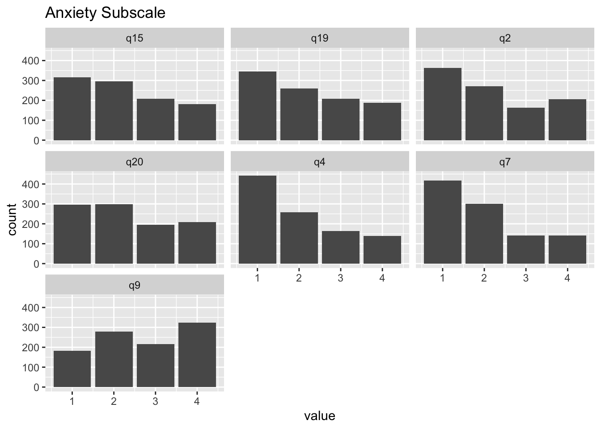
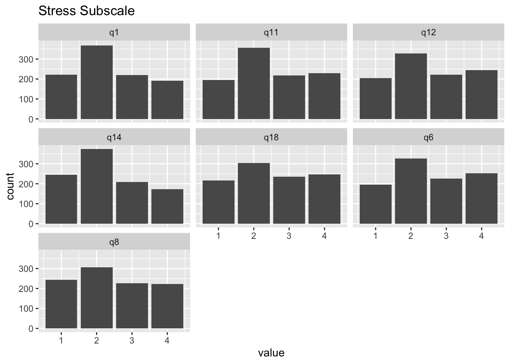
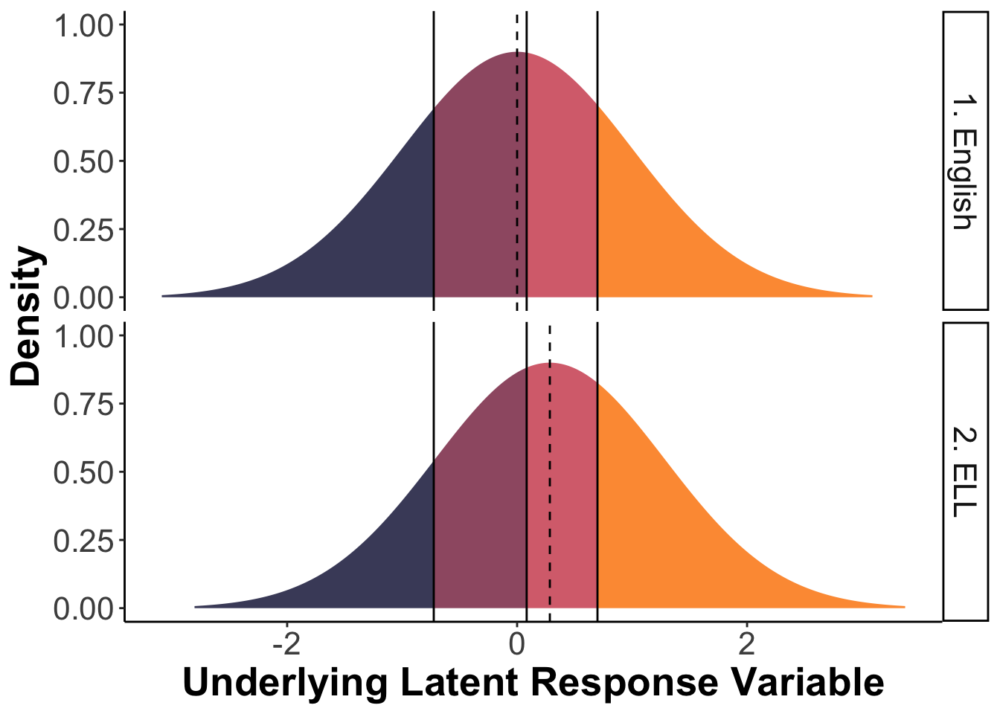

library(rio)
library(lavaan)
library(semTools)
library(ggplot2)
library(dplyr)
library(tidyr)
library(semhelpinghands)
library(ggdist)10 Measurement Invariance Testing with Ordinal Indicators
Note
You can download the R code used in this lab by right-clicking this link and selecting “Save Link As…” in the drop-down menu: measurementinvariance_ord.R
10.1 Loading R packages
Load the required packages for this lab into your R environment.
10.2 Loading Data
Load the data into your environment. For this lab we will use a dataset of N = 1000 individuals who completed the Depression-Anxiety-Stress Scales (DASS-21). For this lab, we will focus on the Anxiety and Stress subscales. We will see if there is measurement invariance across participants whose native language is English (1) versus participants who have a different native language/ELL (2).
You can download the data by right-clicking this link and selecting “Save Link As…” in the drop-down menu: data/DASS21.csv. Make sure to save it in the folder you are using for this class.
DASS21 <- import(file = "data/DASS21.csv")
DASS21$engnat <- factor(DASS21$engnat,
levels = c("EnglishNative", "ELL"))Here is an overview of the questions on the Anxiety subscale:
- q2: I was aware of dryness in my mouth
- q4: I experienced breathing difficulty (eg, excessively rapid breathing, breathlessness in the absence of physical exertion)
- q7: I experienced trembling (e.g., in the hands)
- q9: I was worried about situations in which I might panic and make a fool of myself.
- q15: I felt I was close to panic.
- q19: I was aware of the action of my heart in the absence of physical exertion (eg, sense of heart rate increase, heart missing a beat).
- q20: I felt scared without any good reason.
And the questions on the Stress subscale:
- q1: I found it hard to wind down.
- q6: I tended to over-react to situations.
- q8: I felt that I was using a lot of nervous energy.
- q11: I found myself getting agitated.
- q12: I found it difficult to relax.
- q14: I was intolerant of anything that kept me from getting on with what I was doing.
- q18: I felt that I was rather touchy.
You may remember that we used this data when we talked about measurement invariance with continuous indicators. In reality, the responses to these items are on a four-point Likert-type scale, ranging from Never to Almost Always. As I’ve mentioned before, with fewer than 5 response options, assuming that data can be treated as though they are continuous is tenuous at best. In addition, the response distributions for some of these items are skewed (see plots below). Thus, in this lab, we will examine if levels of measurement invariance can be retained when we properly model the data as ordinal instead of continuous.
DASS21 %>%
select(q2, q4, q7, q9, q15, q19, q20) %>%
pivot_longer(cols = q2:q20) %>%
ggplot(aes(x = value)) +
geom_bar() +
facet_wrap(vars(name)) +
ggtitle("Anxiety Subscale")
DASS21 %>%
select(q1, q6, q8, q11, q12, q14, q18) %>%
pivot_longer(cols = q1:q18) %>%
ggplot(aes(x = value)) +
geom_bar() +
facet_wrap(vars(name)) +
ggtitle("Stress Subscale")
10.3 Statistical Decision Criteria
For this lab, I will use the following statistical decision criteria for the model comparison tests between levels of invariance. These are based on the knowledge that our samples are relatively large (N = 500 per group), and are informed by the textbook and Chen (2007):
- Look at Chi-square Difference test.
- If not significant: retain next level of invariance
- If significant, look at other fit information
- Are there any patterns of problematic correlation residuals > |.10|? Reject next level of invariance, test partial invariance
- Does CFI decrease ≤ 0.010 or does RMSEA increase by ≥ 0.015? Reject next level of invariance, test partial invariance
10.4 Configural Invariance
We will specify a two-factor CFA using lavaan syntax. Based on previous research, this two-factor model already includes residual covariances between two pairs of items. What these items have in common is that they focus on physical symptoms of anxiety, which causes them to share more commmon variance with each other (especially with q4) than with the other anxiety items.
cfa_config <- '
anxiety =~ q2 + q4 + q7 + q9 + q15 + q19 + q20
stress =~ q1 + q6 + q8 + q11 + q12 + q14 + q18
q4 ~~ q19
q4 ~~ q7
'We are going to use a function from the semTools package that will help us set the scale for our latent factors and apply the equality constraint labels. This saves us A LOT of typing. Given the ordinal nature of our indicators, we will use the Wu & Estabrook (2016) approach for model identification, which is typically combined with the unit-variance scaling of the latent factors (so the variances of the factors are [initially] fixed to 1, factor means are [initially] fixed to zero, and all loadings are estimated in both groups). In addition, we use Delta parameterization, which scales the latent response variables to follow a standard Normal distribution.
We also have to declare that the indicators are ordinal, which we can do by adding ordered = T. If you have a mix of ordinal and continuous items in your analysis, you need to specify which variables are ordinal: ordered = c("q1", "q2").
Finally, we switch the estimator to wlsmv, which stands for weighted least sqaures-mean and variance adjusted. This is the recommended estimator for analyses with ordinal endogenous variables.
fit.config <- measEq.syntax(configural.model = cfa_config, data = DASS21,
group = "engnat", ordered = T,
ID.fac = "std.lv",
ID.cat = "Wu.Estabrook.2016",
parameterization = "delta",
meanstructure = TRUE,
return.fit = TRUE,
estimator = "wlsmv")
# Print out the model syntax, so you can
# see what semTools is helping us do:
cat(as.character(fit.config@call$model))## LOADINGS:
anxiety =~ c(NA, NA)*q2 + c(lambda.1_1.g1, lambda.1_1.g2)*q2
anxiety =~ c(NA, NA)*q4 + c(lambda.2_1.g1, lambda.2_1.g2)*q4
anxiety =~ c(NA, NA)*q7 + c(lambda.3_1.g1, lambda.3_1.g2)*q7
anxiety =~ c(NA, NA)*q9 + c(lambda.4_1.g1, lambda.4_1.g2)*q9
anxiety =~ c(NA, NA)*q15 + c(lambda.5_1.g1, lambda.5_1.g2)*q15
anxiety =~ c(NA, NA)*q19 + c(lambda.6_1.g1, lambda.6_1.g2)*q19
anxiety =~ c(NA, NA)*q20 + c(lambda.7_1.g1, lambda.7_1.g2)*q20
stress =~ c(NA, NA)*q1 + c(lambda.8_2.g1, lambda.8_2.g2)*q1
stress =~ c(NA, NA)*q6 + c(lambda.9_2.g1, lambda.9_2.g2)*q6
stress =~ c(NA, NA)*q8 + c(lambda.10_2.g1, lambda.10_2.g2)*q8
stress =~ c(NA, NA)*q11 + c(lambda.11_2.g1, lambda.11_2.g2)*q11
stress =~ c(NA, NA)*q12 + c(lambda.12_2.g1, lambda.12_2.g2)*q12
stress =~ c(NA, NA)*q14 + c(lambda.13_2.g1, lambda.13_2.g2)*q14
stress =~ c(NA, NA)*q18 + c(lambda.14_2.g1, lambda.14_2.g2)*q18
## THRESHOLDS:
q2 | c(NA, NA)*t1 + c(q2.thr1.g1, q2.thr1.g2)*t1
q2 | c(NA, NA)*t2 + c(q2.thr2.g1, q2.thr2.g2)*t2
q2 | c(NA, NA)*t3 + c(q2.thr3.g1, q2.thr3.g2)*t3
q4 | c(NA, NA)*t1 + c(q4.thr1.g1, q4.thr1.g2)*t1
q4 | c(NA, NA)*t2 + c(q4.thr2.g1, q4.thr2.g2)*t2
q4 | c(NA, NA)*t3 + c(q4.thr3.g1, q4.thr3.g2)*t3
q7 | c(NA, NA)*t1 + c(q7.thr1.g1, q7.thr1.g2)*t1
q7 | c(NA, NA)*t2 + c(q7.thr2.g1, q7.thr2.g2)*t2
q7 | c(NA, NA)*t3 + c(q7.thr3.g1, q7.thr3.g2)*t3
q9 | c(NA, NA)*t1 + c(q9.thr1.g1, q9.thr1.g2)*t1
q9 | c(NA, NA)*t2 + c(q9.thr2.g1, q9.thr2.g2)*t2
q9 | c(NA, NA)*t3 + c(q9.thr3.g1, q9.thr3.g2)*t3
q15 | c(NA, NA)*t1 + c(q15.thr1.g1, q15.thr1.g2)*t1
q15 | c(NA, NA)*t2 + c(q15.thr2.g1, q15.thr2.g2)*t2
q15 | c(NA, NA)*t3 + c(q15.thr3.g1, q15.thr3.g2)*t3
q19 | c(NA, NA)*t1 + c(q19.thr1.g1, q19.thr1.g2)*t1
q19 | c(NA, NA)*t2 + c(q19.thr2.g1, q19.thr2.g2)*t2
q19 | c(NA, NA)*t3 + c(q19.thr3.g1, q19.thr3.g2)*t3
q20 | c(NA, NA)*t1 + c(q20.thr1.g1, q20.thr1.g2)*t1
q20 | c(NA, NA)*t2 + c(q20.thr2.g1, q20.thr2.g2)*t2
q20 | c(NA, NA)*t3 + c(q20.thr3.g1, q20.thr3.g2)*t3
q1 | c(NA, NA)*t1 + c(q1.thr1.g1, q1.thr1.g2)*t1
q1 | c(NA, NA)*t2 + c(q1.thr2.g1, q1.thr2.g2)*t2
q1 | c(NA, NA)*t3 + c(q1.thr3.g1, q1.thr3.g2)*t3
q6 | c(NA, NA)*t1 + c(q6.thr1.g1, q6.thr1.g2)*t1
q6 | c(NA, NA)*t2 + c(q6.thr2.g1, q6.thr2.g2)*t2
q6 | c(NA, NA)*t3 + c(q6.thr3.g1, q6.thr3.g2)*t3
q8 | c(NA, NA)*t1 + c(q8.thr1.g1, q8.thr1.g2)*t1
q8 | c(NA, NA)*t2 + c(q8.thr2.g1, q8.thr2.g2)*t2
q8 | c(NA, NA)*t3 + c(q8.thr3.g1, q8.thr3.g2)*t3
q11 | c(NA, NA)*t1 + c(q11.thr1.g1, q11.thr1.g2)*t1
q11 | c(NA, NA)*t2 + c(q11.thr2.g1, q11.thr2.g2)*t2
q11 | c(NA, NA)*t3 + c(q11.thr3.g1, q11.thr3.g2)*t3
q12 | c(NA, NA)*t1 + c(q12.thr1.g1, q12.thr1.g2)*t1
q12 | c(NA, NA)*t2 + c(q12.thr2.g1, q12.thr2.g2)*t2
q12 | c(NA, NA)*t3 + c(q12.thr3.g1, q12.thr3.g2)*t3
q14 | c(NA, NA)*t1 + c(q14.thr1.g1, q14.thr1.g2)*t1
q14 | c(NA, NA)*t2 + c(q14.thr2.g1, q14.thr2.g2)*t2
q14 | c(NA, NA)*t3 + c(q14.thr3.g1, q14.thr3.g2)*t3
q18 | c(NA, NA)*t1 + c(q18.thr1.g1, q18.thr1.g2)*t1
q18 | c(NA, NA)*t2 + c(q18.thr2.g1, q18.thr2.g2)*t2
q18 | c(NA, NA)*t3 + c(q18.thr3.g1, q18.thr3.g2)*t3
## INTERCEPTS:
q2 ~ c(0, 0)*1 + c(nu.1.g1, nu.1.g2)*1
q4 ~ c(0, 0)*1 + c(nu.2.g1, nu.2.g2)*1
q7 ~ c(0, 0)*1 + c(nu.3.g1, nu.3.g2)*1
q9 ~ c(0, 0)*1 + c(nu.4.g1, nu.4.g2)*1
q15 ~ c(0, 0)*1 + c(nu.5.g1, nu.5.g2)*1
q19 ~ c(0, 0)*1 + c(nu.6.g1, nu.6.g2)*1
q20 ~ c(0, 0)*1 + c(nu.7.g1, nu.7.g2)*1
q1 ~ c(0, 0)*1 + c(nu.8.g1, nu.8.g2)*1
q6 ~ c(0, 0)*1 + c(nu.9.g1, nu.9.g2)*1
q8 ~ c(0, 0)*1 + c(nu.10.g1, nu.10.g2)*1
q11 ~ c(0, 0)*1 + c(nu.11.g1, nu.11.g2)*1
q12 ~ c(0, 0)*1 + c(nu.12.g1, nu.12.g2)*1
q14 ~ c(0, 0)*1 + c(nu.13.g1, nu.13.g2)*1
q18 ~ c(0, 0)*1 + c(nu.14.g1, nu.14.g2)*1
## SCALING FACTORS:
q2 ~*~ c(1, 1)*q2
q4 ~*~ c(1, 1)*q4
q7 ~*~ c(1, 1)*q7
q9 ~*~ c(1, 1)*q9
q15 ~*~ c(1, 1)*q15
q19 ~*~ c(1, 1)*q19
q20 ~*~ c(1, 1)*q20
q1 ~*~ c(1, 1)*q1
q6 ~*~ c(1, 1)*q6
q8 ~*~ c(1, 1)*q8
q11 ~*~ c(1, 1)*q11
q12 ~*~ c(1, 1)*q12
q14 ~*~ c(1, 1)*q14
q18 ~*~ c(1, 1)*q18
## UNIQUE-FACTOR COVARIANCES:
q4 ~~ c(NA, NA)*q7 + c(theta.3_2.g1, theta.3_2.g2)*q7
q4 ~~ c(NA, NA)*q19 + c(theta.6_2.g1, theta.6_2.g2)*q19
## LATENT MEANS/INTERCEPTS:
anxiety ~ c(0, 0)*1 + c(alpha.1.g1, alpha.1.g2)*1
stress ~ c(0, 0)*1 + c(alpha.2.g1, alpha.2.g2)*1
## COMMON-FACTOR VARIANCES:
anxiety ~~ c(1, 1)*anxiety + c(psi.1_1.g1, psi.1_1.g2)*anxiety
stress ~~ c(1, 1)*stress + c(psi.2_2.g1, psi.2_2.g2)*stress
## COMMON-FACTOR COVARIANCES:
anxiety ~~ c(NA, NA)*stress + c(psi.2_1.g1, psi.2_1.g2)*stressTo see if the configural model is tenable, we will first inspect indices of global (exact and approximate) fit. With WLSMV, we focus on scaled (but NOT robust) fit indices. To save space, we will use the fitMeasures function, which prints out just the fit indices we ask for.
fitMeasures(fit.config,
fit.measures = c("chisq.scaled", "df.scaled",
"pvalue.scaled", "cfi.scaled",
"rmsea.scaled", "rmsea.ci.lower.scaled",
"rmsea.ci.upper.scaled", "srmr")) chisq.scaled df.scaled pvalue.scaled
428.078 148.000 0.000
cfi.scaled rmsea.scaled rmsea.ci.lower.scaled
0.982 0.062 0.055
rmsea.ci.upper.scaled srmr
0.068 0.037 The Chi-square test is significant, but other indices look better. Our sample is relatively large, so we will look at the local fit indices to see if any remaining misfit is trivial, or if there are major issues. With ordinal data, we get residuals for the covariances, means, and thresholds. Right now, our model only constrains the covariances, so we will focus on that output.
residuals(fit.config, type = "cor.bollen")$EnglishNative$cov q2 q4 q7 q9 q15 q19 q20 q1 q6 q8
q2 0.000
q4 0.081 0.000
q7 0.055 0.000 0.000
q9 -0.047 -0.051 0.020 0.000
q15 -0.086 0.026 -0.017 -0.014 0.000
q19 0.040 0.000 0.076 -0.047 -0.034 0.000
q20 -0.087 0.024 -0.040 0.032 0.007 -0.025 0.000
q1 -0.033 -0.051 -0.045 -0.018 -0.006 0.016 -0.010 0.000
q6 -0.008 -0.035 -0.036 0.040 0.009 -0.007 -0.020 -0.034 0.000
q8 0.001 0.014 0.093 0.040 0.065 0.029 0.064 -0.062 -0.061 0.000
q11 0.004 -0.048 -0.088 0.013 -0.028 -0.031 -0.004 -0.009 0.061 -0.060
q12 -0.040 0.007 -0.056 -0.037 0.018 -0.027 -0.038 0.095 -0.014 -0.037
q14 0.063 -0.036 -0.013 -0.021 -0.044 0.021 -0.024 0.026 -0.003 -0.121
q18 0.043 0.028 0.001 0.018 -0.060 0.002 -0.010 -0.043 0.057 -0.050
q11 q12 q14 q18
q2
q4
q7
q9
q15
q19
q20
q1
q6
q8
q11 0.000
q12 -0.016 0.000
q14 0.107 -0.037 0.000
q18 0.014 -0.015 0.038 0.000residuals(fit.config, type = "cor.bollen")$ELL$cov q2 q4 q7 q9 q15 q19 q20 q1 q6 q8
q2 0.000
q4 0.080 0.000
q7 0.027 0.000 0.000
q9 -0.024 -0.030 -0.022 0.000
q15 -0.052 0.008 0.013 0.045 0.000
q19 0.024 0.000 0.039 -0.087 0.001 0.000
q20 0.007 -0.048 -0.017 0.020 0.006 -0.052 0.000
q1 -0.029 -0.016 -0.032 -0.061 -0.051 -0.014 -0.019 0.000
q6 -0.003 0.001 -0.032 -0.001 -0.020 -0.011 0.004 0.041 0.000
q8 0.012 0.023 0.063 0.062 0.048 0.049 0.015 -0.073 -0.070 0.000
q11 0.025 -0.012 -0.056 -0.017 -0.016 0.018 0.033 0.038 -0.028 -0.031
q12 -0.055 0.004 -0.028 -0.026 -0.012 0.024 0.005 0.077 -0.016 -0.025
q14 -0.020 0.005 0.003 0.005 -0.054 -0.031 -0.005 0.039 0.047 -0.029
q18 0.002 0.005 0.007 0.015 -0.049 0.033 0.009 -0.042 0.092 -0.068
q11 q12 q14 q18
q2
q4
q7
q9
q15
q19
q20
q1
q6
q8
q11 0.000
q12 0.005 0.000
q14 0.003 0.001 0.000
q18 0.026 -0.049 0.006 0.000Overall, the correlation residuals look good. Only the correlation residuals of q14 with q8 and q11 were > |.1| in the English native speaker group. There is no a priori justification why these three items share an omitted cause (that could be accommodated via a residual covariance). In addition, the correlation residuals were relatively close to |.1|, indicating that adding a residual covariance would likely only have a small impact on global model fit. Thus, we will retain the configural invariance model, and examine threshold invariance.
Parameter Estimate Interpretation
Using the function below, we can compare the estimates across groups and see that all the measurement-related parameters are still varying across groups (as we have not included any equality constraints yet).
group_by_groups(fit.config) lhs op rhs est_EnglishNative est_ELL
1 anxiety =~ q15 0.869 0.854
2 anxiety =~ q19 0.660 0.683
3 anxiety =~ q2 0.574 0.566
4 anxiety =~ q20 0.782 0.809
5 anxiety =~ q4 0.742 0.686
6 anxiety =~ q7 0.720 0.677
7 anxiety =~ q9 0.772 0.735
8 stress =~ q1 0.799 0.776
9 stress =~ q11 0.760 0.763
10 stress =~ q12 0.820 0.791
11 stress =~ q14 0.656 0.692
12 stress =~ q18 0.655 0.608
13 stress =~ q6 0.779 0.742
14 stress =~ q8 0.824 0.829
15 anxiety ~~ anxiety 1.000 1.000
16 anxiety ~~ stress 0.902 0.917
17 q1 ~~ q1 0.361 0.397
18 q11 ~~ q11 0.423 0.418
19 q12 ~~ q12 0.327 0.375
20 q14 ~~ q14 0.570 0.521
21 q15 ~~ q15 0.246 0.270
22 q18 ~~ q18 0.571 0.631
23 q19 ~~ q19 0.565 0.534
24 q2 ~~ q2 0.671 0.680
25 q20 ~~ q20 0.389 0.346
26 q4 ~~ q19 0.183 0.174
27 q4 ~~ q4 0.449 0.529
28 q4 ~~ q7 0.047 0.144
29 q6 ~~ q6 0.393 0.449
30 q7 ~~ q7 0.481 0.541
31 q8 ~~ q8 0.321 0.313
32 q9 ~~ q9 0.405 0.460
33 stress ~~ stress 1.000 1.000
34 anxiety ~1 0.000 0.000
35 q1 ~1 0.000 0.000
36 q11 ~1 0.000 0.000
37 q12 ~1 0.000 0.000
38 q14 ~1 0.000 0.000
39 q15 ~1 0.000 0.000
40 q18 ~1 0.000 0.000
41 q19 ~1 0.000 0.000
42 q2 ~1 0.000 0.000
43 q20 ~1 0.000 0.000
44 q4 ~1 0.000 0.000
45 q6 ~1 0.000 0.000
46 q7 ~1 0.000 0.000
47 q8 ~1 0.000 0.000
48 q9 ~1 0.000 0.000
49 stress ~1 0.000 0.000
50 q1 | t1 -0.820 -0.713
51 q1 | t2 0.025 0.440
52 q1 | t3 0.700 1.080
53 q11 | t1 -1.054 -0.693
54 q11 | t2 -0.065 0.332
55 q11 | t3 0.530 0.986
56 q12 | t1 -0.915 -0.739
57 q12 | t2 -0.070 0.238
58 q12 | t3 0.559 0.834
59 q14 | t1 -0.693 -0.687
60 q14 | t2 0.285 0.321
61 q14 | t3 0.878 1.019
62 q15 | t1 -0.674 -0.305
63 q15 | t2 0.111 0.457
64 q15 | t3 0.772 1.071
65 q18 | t1 -0.662 -0.923
66 q18 | t2 0.050 0.045
67 q18 | t3 0.674 0.700
68 q19 | t1 -0.451 -0.353
69 q19 | t2 0.212 0.316
70 q19 | t3 0.820 0.954
71 q2 | t1 -0.217 -0.490
72 q2 | t2 0.407 0.274
73 q2 | t3 0.793 0.856
74 q20 | t1 -0.530 -0.542
75 q20 | t2 0.176 0.305
76 q20 | t3 0.726 0.900
77 q4 | t1 -0.238 -0.055
78 q4 | t2 0.418 0.631
79 q4 | t3 0.994 1.195
80 q6 | t1 -0.938 -0.779
81 q6 | t2 -0.080 0.192
82 q6 | t3 0.565 0.772
83 q7 | t1 -0.321 -0.100
84 q7 | t2 0.490 0.668
85 q7 | t3 1.019 1.136
86 q8 | t1 -0.745 -0.643
87 q8 | t2 -0.025 0.285
88 q8 | t3 0.625 0.915
89 q9 | t1 -0.849 -0.962
90 q9 | t2 -0.187 -0.010
91 q9 | t3 0.348 0.571
92 q1 ~*~ q1 1.000 1.000
93 q11 ~*~ q11 1.000 1.000
94 q12 ~*~ q12 1.000 1.000
95 q14 ~*~ q14 1.000 1.000
96 q15 ~*~ q15 1.000 1.000
97 q18 ~*~ q18 1.000 1.000
98 q19 ~*~ q19 1.000 1.000
99 q2 ~*~ q2 1.000 1.000
100 q20 ~*~ q20 1.000 1.000
101 q4 ~*~ q4 1.000 1.000
102 q6 ~*~ q6 1.000 1.000
103 q7 ~*~ q7 1.000 1.000
104 q8 ~*~ q8 1.000 1.000
105 q9 ~*~ q9 1.000 1.00010.5 Threshold Invariance
All we need to do to estimate the Threshold Invariance model is change the arguments of the function a little bit (add group.equal = "thresholds"):
fit.thresh <- measEq.syntax(configural.model = cfa_config, data = DASS21,
group = "engnat", ordered = T,
ID.fac = "std.lv",
ID.cat = "Wu.Estabrook.2016",
parameterization = "delta",
meanstructure = TRUE,
return.fit = TRUE,
estimator = "wlsmv",
group.equal = "thresholds")
# Print out the model syntax, so you can
# see what semTools is helping us do:
# cat(as.character(fit.thresh@call$model))In the model syntax above (if you remove the # and run the line of code), you can see that each factor loading now has the same label across the two groups, ensuring that they are constraint to be equal.
Model Comparison
To test if we can retain the Threshold Invariance model, we compare its fit to that of the Configural Invariance model:
comp_12 <- compareFit(fit.config, fit.thresh)
comp_12@nested
Scaled Chi-Squared Difference Test (method = "satorra.2000")
lavaan->unknown():
lavaan NOTE: The "Chisq" column contains standard test statistics, not the
robust test that should be reported per model. A robust difference test is
a function of two standard (not robust) statistics.
Df AIC BIC Chisq Chisq diff Df diff Pr(>Chisq)
fit.config 148 227.63
fit.thresh 162 234.16 18.999 14 0.165What does the Chi-square difference test result tell us?
Parameter Estimate Interpretation
Using the function below, we can easily compare the estimates across groups and see that all the thresholds are now exactly the same (because we constrained them to be).
# Look at threshold parameter estimates across groups by using filter
# to include only results with the threshold operator "|"
group_by_groups(fit.thresh) %>% filter(op == "|") lhs op rhs est_EnglishNative est_ELL
1 q1 | t1 -0.843 -0.843
2 q1 | t2 0.070 0.070
3 q1 | t3 0.667 0.667
4 q11 | t1 -1.050 -1.050
5 q11 | t2 -0.072 -0.072
6 q11 | t3 0.535 0.535
7 q12 | t1 -0.928 -0.928
8 q12 | t2 -0.047 -0.047
9 q12 | t3 0.544 0.544
10 q14 | t1 -0.686 -0.686
11 q14 | t2 0.269 0.269
12 q14 | t3 0.890 0.890
13 q15 | t1 -0.677 -0.677
14 q15 | t2 0.115 0.115
15 q15 | t3 0.769 0.769
16 q18 | t1 -0.678 -0.678
17 q18 | t2 0.082 0.082
18 q18 | t3 0.653 0.653
19 q19 | t1 -0.449 -0.449
20 q19 | t2 0.208 0.208
21 q19 | t3 0.823 0.823
22 q2 | t1 -0.209 -0.209
23 q2 | t2 0.386 0.386
24 q2 | t3 0.807 0.807
25 q20 | t1 -0.535 -0.535
26 q20 | t2 0.187 0.187
27 q20 | t3 0.718 0.718
28 q4 | t1 -0.241 -0.241
29 q4 | t2 0.424 0.424
30 q4 | t3 0.990 0.990
31 q6 | t1 -0.953 -0.953
32 q6 | t2 -0.054 -0.054
33 q6 | t3 0.548 0.548
34 q7 | t1 -0.323 -0.323
35 q7 | t2 0.496 0.496
36 q7 | t3 1.015 1.015
37 q8 | t1 -0.763 -0.763
38 q8 | t2 0.008 0.008
39 q8 | t3 0.603 0.603
40 q9 | t1 -0.865 -0.865
41 q9 | t2 -0.155 -0.155
42 q9 | t3 0.328 0.328When we retain the Threshold Invariance model, we can conclude that participants in both groups switch from one response option to the next at equivalent locations on the latent response variable. Confirming this level of invariance allows us to movee to the more familiar weak (loadings) and strong (intercepts) variance.
10.6 Weak (Metric) Invariance
Again, all we need to do to estimate the Loading Invariance model is change the arguments of the function a little bit:
fit.weak <- measEq.syntax(configural.model = cfa_config, data = DASS21,
group = "engnat", ordered = T,
ID.fac = "std.lv",
ID.cat = "Wu.Estabrook.2016",
parameterization = "delta",
meanstructure = TRUE,
return.fit = TRUE,
estimator = "wlsmv",
group.equal = c("thresholds","loadings"))
# Print out the model syntax, so you can
# see what semTools is helping us do:
# cat(as.character(fit.weak@call$model))Model Comparison
To test if we can retain the Strong Invariance model, we compare its fit to that of the Weak Invariance model:
comp_23 <- compareFit(fit.thresh, fit.weak)
comp_23@nested
Scaled Chi-Squared Difference Test (method = "satorra.2000")
lavaan->unknown():
lavaan NOTE: The "Chisq" column contains standard test statistics, not the
robust test that should be reported per model. A robust difference test is
a function of two standard (not robust) statistics.
Df AIC BIC Chisq Chisq diff Df diff Pr(>Chisq)
fit.thresh 162 234.16
fit.weak 174 252.28 18.577 12 0.09925 .
---
Signif. codes: 0 '***' 0.001 '**' 0.01 '*' 0.05 '.' 0.1 ' ' 1What does the Chi-square difference test result tell us?
When we retain the Weak Invariance model, we can conclude that the measured concepts (Anxiety and Stress) have the same meaning across groups, because the item-factor associations can be considered equivalent (the same amount of common variance is extracted across groups).
10.7 Strong (Scalar) Invariance
fit.strong <- measEq.syntax(configural.model = cfa_config, data = DASS21,
group = "engnat", ordered = T,
ID.fac = "std.lv",
ID.cat = "Wu.Estabrook.2016",
parameterization = "delta",
meanstructure = TRUE,
return.fit = TRUE,
estimator = "wlsmv",
group.equal = c("thresholds",
"loadings",
"intercepts"))
# Print out the model syntax, so you can
# see what semTools is helping us do:
# cat(as.character(fit.strong@call$model))Model Comparison
To test if we can retain the Strong Invariance model, we compare its fit to that of the Weak Invariance model:
comp_34 <- compareFit(fit.weak, fit.strong)
comp_34@nested
Scaled Chi-Squared Difference Test (method = "satorra.2000")
lavaan->unknown():
lavaan NOTE: The "Chisq" column contains standard test statistics, not the
robust test that should be reported per model. A robust difference test is
a function of two standard (not robust) statistics.
Df AIC BIC Chisq Chisq diff Df diff Pr(>Chisq)
fit.weak 174 252.28
fit.strong 186 347.39 88.083 12 1.159e-13 ***
---
Signif. codes: 0 '***' 0.001 '**' 0.01 '*' 0.05 '.' 0.1 ' ' 1What does the Chi-square difference test result tell us?
Local Fit Comparison
Typically, we would look at mean residuals here. However, since the observed means depend on the latent response variable intercept and the thresholds, large residuals may be due to a combinations of small misfit in each of these parameter types. So, large values may not neccessarily point towards a problem with the latent response variable intercepts.
residuals(fit.strong, type = "cor.bollen")$EnglishNative$mean q2 q4 q7 q9 q15 q19 q20 q1 q6 q8 q11 q12 q14 q18
0 0 0 0 0 0 0 0 0 0 0 0 0 0 residuals(fit.strong, type = "cor.bollen")$ELL$mean q2 q4 q7 q9 q15 q19 q20 q1 q6 q8 q11 q12 q14
0.094 0.122 0.119 0.126 0.143 0.109 0.128 0.203 0.199 0.210 0.195 0.209 0.169
q18
0.164 You will notice that mean residuals for a specific indicator are 0 for the first group and a different value for the second group. When we constrain intercepts of the latent response variables to be equal across groups, with ordinal variables, the latent response variable intercept will map onto the observed mean (resulting in a mean residual of 0 for that group). In the analysis, this step is implemented by fixing the intercept to 0 in both groups.
To better understand how the equivalence of the latent response variable intercepts affected local fit, we can use the difference between the mean residuals of the Weak and Strong model. This shows which mean residuals changed most as a consequence of fixing the intercepts to 0:
residuals(fit.weak, type = "cor.bollen")$ELL$mean - residuals(fit.strong, type = "cor.bollen")$ELL$mean q2 q4 q7 q9 q15 q19 q20 q1 q6 q8 q11
-0.239 0.066 0.047 -0.009 0.171 -0.029 -0.058 0.078 0.012 0.005 0.183
q12 q14 q18
0.038 -0.140 -0.234 Which intercepts appear to be most different across groups (in an absolute sense)?
10.8 Partial Strong Invariance (Round 1)
Since the fit worsened significantly when testing Strong Invariance, we will focus on identifying problematic latent response variable intercepts. In this case, we can use the modindices function. This is different from measurement invariance with continuous indicators. With continuous indicators, we use an equivalence constraint to force the intercepts to be equivalent, and we need to use lavTestScore to see what would happen to model fit if the equivalence constraint was removed. With ordinal indicators, latent response variable invariance is accomplished by fixing the intercepts to 0 in both groups (instead of 0 in one group and freely estimated in the other). Thus, with ordinal variables, the intercept is not estimated, so we can use modification indices to examine to what extent model fit would improve if an intercept is freely estimated.
modificationIndices(fit.strong, sort. = TRUE, op = "~1",
minimum.value = 15)Warning: lavaan->modificationIndices():
the modindices() function ignores equality constraints; use lavTestScore()
to assess the impact of releasing one or multiple constraints. lhs op rhs block group level mi epc sepc.lv sepc.all sepc.nox
57 q2 ~1 1 1 1 28.618 0.266 0.266 0.266 0.266
162 q2 ~1 2 2 1 28.618 -0.266 -0.266 -0.289 -0.289
70 q18 ~1 1 1 1 27.358 0.261 0.261 0.261 0.261
175 q18 ~1 2 2 1 27.358 -0.261 -0.261 -0.280 -0.280
67 q11 ~1 1 1 1 17.439 -0.214 -0.214 -0.214 -0.214
172 q11 ~1 2 2 1 17.439 0.214 0.214 0.241 0.241
166 q15 ~1 2 2 1 15.841 0.212 0.212 0.231 0.231
61 q15 ~1 1 1 1 15.840 -0.212 -0.212 -0.212 -0.212Which intercepts appear to be different across groups?
In our previous analyses of these data (treating the data as continuous), we found that item 18 and item 2 had non-invariant intercepts. Those same intercepts emerge as problematic in this analysis.
Model Comparison
To test if releasing the constraint for item 2 improves the fit of the Partial Strong Model sufficiently, we need to estimate the partial model. To do so, we can use the group.partial argument in the measEq.syntax() function:
fit.partial1 <- measEq.syntax(configural.model = cfa_config, data = DASS21,
group = "engnat", ordered = T,
ID.fac = "std.lv",
ID.cat = "Wu.Estabrook.2016",
parameterization = "delta",
meanstructure = TRUE,
return.fit = TRUE,
estimator = "wlsmv",
group.equal = c("thresholds",
"loadings",
"intercepts"),
group.partial = c("q2 ~ 1"))
# Print out the model syntax, so you can
# see what semTools is helping us do:
# cat(as.character(fit.partial1@call$model))Let’s compare the fit of this model to the Weak Invariance model
comp_34b <- compareFit(fit.weak, fit.partial1)
comp_34b@nested
Scaled Chi-Squared Difference Test (method = "satorra.2000")
lavaan->unknown():
lavaan NOTE: The "Chisq" column contains standard test statistics, not the
robust test that should be reported per model. A robust difference test is
a function of two standard (not robust) statistics.
Df AIC BIC Chisq Chisq diff Df diff Pr(>Chisq)
fit.weak 174 252.28
fit.partial1 185 318.72 64.682 11 1.236e-09 ***
---
Signif. codes: 0 '***' 0.001 '**' 0.01 '*' 0.05 '.' 0.1 ' ' 1What do the results indicate?
10.9 Partial Strong Invariance (Round 2)
Since the model fit indicated some remaining issues with retaining the Partial Strong Invariance model, we will do another round of partial invariance testing:
modificationIndices(fit.partial1, sort. = TRUE, op = "~1",
minimum.value = 15)Warning: lavaan->modificationIndices():
the modindices() function ignores equality constraints; use lavTestScore()
to assess the impact of releasing one or multiple constraints. lhs op rhs block group level mi epc sepc.lv sepc.all sepc.nox
70 q18 ~1 1 1 1 27.356 0.262 0.262 0.262 0.262
175 q18 ~1 2 2 1 27.356 -0.262 -0.262 -0.280 -0.280
172 q11 ~1 2 2 1 17.437 0.214 0.214 0.241 0.241
67 q11 ~1 1 1 1 17.437 -0.214 -0.214 -0.214 -0.214Model Comparison
The intercept of item 18 remains the most problematic. To test if releasing this constraint improves the fit of the Partial Strong Model sufficiently, we need to estimate a second partial model. To do so, we can use the group.partial argument in the measEq.syntax() function and add this second intercept:
fit.partial2 <- measEq.syntax(configural.model = cfa_config, data = DASS21,
group = "engnat", ordered = T,
ID.fac = "std.lv",
ID.cat = "Wu.Estabrook.2016",
parameterization = "delta",
meanstructure = TRUE,
return.fit = TRUE,
estimator = "wlsmv",
group.equal = c("thresholds",
"loadings",
"intercepts"),
group.partial = c("q2 ~ 1", "q18 ~ 1"))
# Print out the model syntax, so you can
# see what semTools is helping us do:
# cat(as.character(fit.partial2@call$model))Let’s compare the fit of this model to the Weak Invariance model
comp_34c <- compareFit(fit.weak, fit.partial2)
print(comp_34c@nested)
Scaled Chi-Squared Difference Test (method = "satorra.2000")
lavaan->unknown():
lavaan NOTE: The "Chisq" column contains standard test statistics, not the
robust test that should be reported per model. A robust difference test is
a function of two standard (not robust) statistics.
Df AIC BIC Chisq Chisq diff Df diff Pr(>Chisq)
fit.weak 174 252.28
fit.partial2 184 291.31 39.063 10 2.475e-05 ***
---
Signif. codes: 0 '***' 0.001 '**' 0.01 '*' 0.05 '.' 0.1 ' ' 1What do the results indicate?
10.10 Partial Strong Invariance (Round 3)
Since the model fit indicated some remaining issues with retaining the Partial Strong Invariance model, we will do another round of partial invariance testing (note that I had to lower the minimum.value to still see modifications; you may choose to stop here and argue that remaining modifications wouldn’t improve fit enough to be warranted):
modificationIndices(fit.partial2, sort. = TRUE, op = "~1",
minimum.value = 10)Warning: lavaan->modificationIndices():
the modindices() function ignores equality constraints; use lavTestScore()
to assess the impact of releasing one or multiple constraints. lhs op rhs block group level mi epc sepc.lv sepc.all sepc.nox
174 q14 ~1 2 2 1 14.616 -0.192 -0.192 -0.222 -0.222
69 q14 ~1 1 1 1 14.616 0.192 0.192 0.192 0.192
67 q11 ~1 1 1 1 12.147 -0.181 -0.181 -0.181 -0.181
172 q11 ~1 2 2 1 12.147 0.181 0.181 0.203 0.203
61 q15 ~1 1 1 1 10.118 -0.171 -0.171 -0.171 -0.171
166 q15 ~1 2 2 1 10.118 0.171 0.171 0.188 0.188Model Comparison
The intercept of item 14 is now most problematic. To test if releasing this constraint improves the fit of the Partial Strong Model sufficiently, we need to estimate a third partial model. To do so, we can use the group.partial argument in the measEq.syntax() function and add this second intercept:
fit.partial3 <- measEq.syntax(configural.model = cfa_config, data = DASS21,
group = "engnat", ordered = T,
ID.fac = "std.lv",
ID.cat = "Wu.Estabrook.2016",
parameterization = "delta",
meanstructure = TRUE,
return.fit = TRUE,
estimator = "wlsmv",
group.equal = c("thresholds",
"loadings",
"intercepts"),
group.partial = c("q2 ~ 1", "q18 ~ 1", "q14 ~ 1"))
# Print out the model syntax, so you can
# see what semTools is helping us do:
# cat(as.character(fit.partial3@call$model))Let’s compare the fit of this model to the Weak Invariance model
comp_34d <- compareFit(fit.weak, fit.partial3)
print(comp_34d@nested)
Scaled Chi-Squared Difference Test (method = "satorra.2000")
lavaan->unknown():
lavaan NOTE: The "Chisq" column contains standard test statistics, not the
robust test that should be reported per model. A robust difference test is
a function of two standard (not robust) statistics.
Df AIC BIC Chisq Chisq diff Df diff Pr(>Chisq)
fit.weak 174 252.28
fit.partial3 183 276.66 24.761 9 0.003247 **
---
Signif. codes: 0 '***' 0.001 '**' 0.01 '*' 0.05 '.' 0.1 ' ' 1What do the results indicate?
10.11 Partial Strong Invariance (Round 4)
Since the model fit indicated some remaining issues with retaining the third Partial Strong Invariance model, we will do another round of partial invariance testing:
modificationIndices(fit.partial3, sort. = TRUE, op = "~1",
minimum.value = 5)Warning: lavaan->modificationIndices():
the modindices() function ignores equality constraints; use lavTestScore()
to assess the impact of releasing one or multiple constraints. lhs op rhs block group level mi epc sepc.lv sepc.all sepc.nox
166 q15 ~1 2 2 1 10.116 0.171 0.171 0.188 0.188
61 q15 ~1 1 1 1 10.116 -0.171 -0.171 -0.171 -0.171
67 q11 ~1 1 1 1 8.401 -0.152 -0.152 -0.152 -0.152
172 q11 ~1 2 2 1 8.401 0.152 0.152 0.172 0.172Model Comparison
The intercept of item 15 is now most problematic. To test if releasing this constraint improves the fit of the Partial Strong Model sufficiently, we need to estimate a second partial model. To do so, we can use the group.partial argument in the measEq.syntax() function and add this fourth intercept:
fit.partial4 <-measEq.syntax(configural.model = cfa_config, data = DASS21,
group = "engnat", ordered = T,
ID.fac = "std.lv",
ID.cat = "Wu.Estabrook.2016",
parameterization = "delta",
meanstructure = TRUE,
return.fit = TRUE,
estimator = "wlsmv",
group.equal = c("thresholds",
"loadings",
"intercepts"),
group.partial = c("q2 ~ 1", "q18 ~ 1",
"q14 ~ 1", "q15 ~ 1"))
# Print out the model syntax, so you can
# see what semTools is helping us do:
# cat(as.character(fit.partial4@call$model))Let’s compare the fit of this model to the Weak Invariance model
comp_34e <- compareFit(fit.weak, fit.partial4)
print(comp_34e@nested)
Scaled Chi-Squared Difference Test (method = "satorra.2000")
lavaan->unknown():
lavaan NOTE: The "Chisq" column contains standard test statistics, not the
robust test that should be reported per model. A robust difference test is
a function of two standard (not robust) statistics.
Df AIC BIC Chisq Chisq diff Df diff Pr(>Chisq)
fit.weak 174 252.28
fit.partial4 182 266.52 14.256 8 0.07534 .
---
Signif. codes: 0 '***' 0.001 '**' 0.01 '*' 0.05 '.' 0.1 ' ' 1What do the results indicate?
Local Fit Evaluation
Again, we will focus on the difference in residuals of the mean vectors.
residuals(fit.weak, type = "cor.bollen")$ELL$mean - residuals(fit.partial4, type = "cor.bollen")$ELL$mean q2 q4 q7 q9 q15 q19 q20 q1 q6 q8 q11
0.002 0.070 0.052 -0.004 0.004 -0.025 -0.054 0.017 -0.047 -0.058 0.124
q12 q14 q18
-0.025 0.000 0.000 This time, we don’t see any problems with the mean vector in terms of local fit.
CFI and RMSEA Comparison
Next, we will examine if the CFI and RMSEA change to a lesser extent then our criteria (decrease in CFI ≤ 0.010, increase in RMSEA ≤ 0.015):
# Change in CFI
cat(paste0("Change in CFI: ", round(comp_34e@fit.diff$cfi.scaled, 3)))Change in CFI: 0# Change in RMSEA
cat(paste0("Change in RMSEA: ", round(comp_34e@fit.diff$rmsea.scaled, 3)))Change in RMSEA: -0.002These are much smaller than our cutoff criteria. They are also smaller than other suggested criteria (e.g., decrease in CFI ≤ 0.002 or increase in RMSEA ≤ 0.010). Based on this information, I will retain this partial strong invariant model with four freely estimated intercepts.
10.12 What do differences in intercepts mean?
It can be difficult to understand what differences in the intercept mean, especially when the thresholds are equivalent across groups. The figure below aims to help improve understanding of this situation, using item 18 as an example.
# Get item 18 intercept value for ELL group
ell_int2 <- parameterEstimates(fit.partial4) %>%
filter(op == "~1" & lhs == "q18" & group == 2) %>%
select(est) %>% as.numeric()
# Get item 18 thresholds (invariant across groups)
ell_thresh2 <- parameterEstimates(fit.partial4) %>%
filter(op == "|" & lhs == "q18" & group == 2) %>%
select(est) %>% unlist()
# Set up the latent response variable normal distribution
# for each group
tribble(
~ dist, ~args,~group,~int,
"norm", list(0, 1),"1. English",0,
"norm", list(ell_int2,1),"2. ELL",ell_int2
) %>% ggplot() +
# Change the fill color of the distribution at each threshold
# value by cutting up the distribution
ggdist::stat_slab(aes(xdist = dist, args = args,
fill = after_stat(cut(x, c(-Inf, ell_thresh2, Inf)))),
show.legend = FALSE) +
# Colors of the different sections of the latent response variable
scale_fill_manual(values = c("#494B69","#9F5B72",
"#D8707C","#FD9B41")) +
# Add vertical lines at each threshold value
geom_vline(xintercept = ell_thresh2[1]) +
geom_vline(xintercept = ell_thresh2[2]) +
geom_vline(xintercept = ell_thresh2[3]) +
# Add a dashed vertical line at the latent response variable
# intercept value
geom_vline(aes(xintercept = int), linetype = "dashed") +
# Plot both groups separately
facet_grid(rows = vars(group)) +
# Add axis labels
labs(x = "Underlying Latent Response Variable", y = "Density") +
# Change plot theme/some formatting
theme_classic() +
theme(text = element_text(size = 20),
axis.title = element_text(face = "bold"),
plot.title = element_text(face = "bold", hjust = .5))
This figure shows that, when the underlying latent factor, Stress, is equal to zero (which in this case indicates the average Stress level, because we used unit-variance factor scaling), English native speakers are most likely to select the second response option (Sometimes), whereas ELL speakers are most likely to select the third response option (Often), in response to item 18 (I felt that I was rather touchy). Thus, at average levels of stress, ELL speakers report often feeling rather touchy whereas English native speakers rerport sometimes feeling rather touchy.
10.13 Parameter Comparison Across Groups
Now that we have finalized the invariance testing procedure (note that you could test higher levels of invariance, but that these offer few practical benefits), we can continue to compare latent factor variances, covariances, and means across groups.
Factor Variances
First, we will test if the factor variances of the Anxiety and Stress factors are equivalent across groups. We will do so by adding lv.variances to the group.equal argument of the previous partial strong invariance model.
fit.partial4.lv <- measEq.syntax(cfa_config, data = DASS21,
ID.fac = "std.lv",
ID.cat = "Wu.Estabrook.2016",
group = "engnat",
group.equal = c("thresholds", "loadings",
"intercepts", "lv.variances"),
group.partial = c("q2 ~ 1", "q18 ~ 1",
"q14 ~ 1", "q15 ~ 1"),
ordered = T,
parameterization = "delta",
meanstructure = TRUE, return.fit = TRUE,
estimator = "wlsmv")
# Print out the model syntax, so you can
# see what semTools is helping us do:
# cat(as.character(fit.partial4.lv@call$model))We can now compare the fit of this model to the previous partial strong invariance model:
comp_4e5 <- compareFit(fit.partial4, fit.partial4.lv)
comp_4e5@nested
Scaled Chi-Squared Difference Test (method = "satorra.2000")
lavaan->unknown():
lavaan NOTE: The "Chisq" column contains standard test statistics, not the
robust test that should be reported per model. A robust difference test is
a function of two standard (not robust) statistics.
Df AIC BIC Chisq Chisq diff Df diff Pr(>Chisq)
fit.partial4 182 266.52
fit.partial4.lv 184 292.03 6.9603 2 0.0308 *
---
Signif. codes: 0 '***' 0.001 '**' 0.01 '*' 0.05 '.' 0.1 ' ' 1What does the Chi-square Difference test tell us?
Based on these results, we will continue with a model with freely estimated factor variances (and covariances). This still allows us to compare the means across groups. We just need to use a slightly more complicated formula to compute Cohen’s d.
Factor Means
We can use the effect size formula from the book chapter to do so (which can be interpreted as a Cohen’s d). For each of the latent factors, we need the latent mean estimates and an estimate of the factor variances. We will find these estimates using the group_by_groups function from the semhelpinghands package and filtering the results:
group_by_groups(fit.partial4) %>%
filter((op == "~1" & (lhs == "stress" | lhs == "anxiety")) |
op == "~~" & (lhs == "stress" | lhs == "anxiety")) lhs op rhs est_EnglishNative est_ELL
1 anxiety ~~ anxiety 1.000 0.795
2 anxiety ~~ stress 0.902 0.722
3 stress ~~ stress 1.000 0.778
4 anxiety ~1 0.000 -0.159
5 stress ~1 0.000 -0.332Here are the computations of the effect size for the mean difference in Anxiety:
# mean in English Native Speaker: 0 (reference group)
# mean in ELL Speaker: -0.159
# variance: 1 (reference group), 0.795 (ELL)
(0 - (-.159)) / sqrt((499*1 + 499*.795)/(499 + 499))[1] 0.167834This indicates that the mean of the Anxiety factor of the English Native Speaker sample is about 0.16 standard deviations higher than that of the ELL Speaker sample.
Here are the computations of the effect size for the mean difference in Stress:
# mean in English Native Speaker: 0 (reference group)
# mean in ELL Speaker: -0.332
# variance: 1 (reference group), 0.778 (ELL)
(0 - (-.332)) / sqrt((499*1 + 499*.778)/(499 + 499))[1] 0.3521172This indicates that the mean of the Stress factor of the English Native Speaker sample is about 0.35 standard deviations higher than that of the ELL Speaker sample.
We can also test whether the mean differences are significant using a Wald test. This test is based on the difference in model chi-square that occurs when two parameters (in this case the latent factor means) are constrained to be equivalent.
# H0: Average anxiety is equivalent across
# English Native and ELL speakers
lavTestWald(fit.partial4, constraints = "alpha.1.g1 == alpha.1.g2")$stat
[1] 5.286136
$df
[1] 1
$p.value
[1] 0.02149586
$se
[1] "robust.sem"# H0: Average stress is equivalent across
# English Native and ELL speakers
lavTestWald(fit.partial4, constraints = "alpha.2.g1 == alpha.2.g2")$stat
[1] 25.04656
$df
[1] 1
$p.value
[1] 5.596256e-07
$se
[1] "robust.sem"Based on the results above, both tests were significant (p < .05), so the mean differences are significant between groups.
10.14 Conclusion
In this example, we found evidence of configural, threshold, and weak invariance of the Anxiety and Stress factors from the DASS-21 over English native and ELL speaker samples. There is somewhat less convincing evidence of strong invariance, in that the majority, but not all, latent response variable intercepts may be equivalent across groups. This means that the English native and ELL speaker samples did not have the same relative standing (i.e., expected response) on four items, given the same position on the underlying conceptual variable (i.e., Anxiety/Stress).
In a paper, you would report all of the above, adding all unstandardized estimates + SEs of the final retained model (in a table).
10.15 Summary
In this R lab, you were introduced to the steps involved in testing measurement invariance with ordinal indicators. In the next R Lab, you will learn all about a very different kind of model, a latent profile analysis, which is used to detect unobserved subgroups that share a similar response pattern to a set of continuous items.